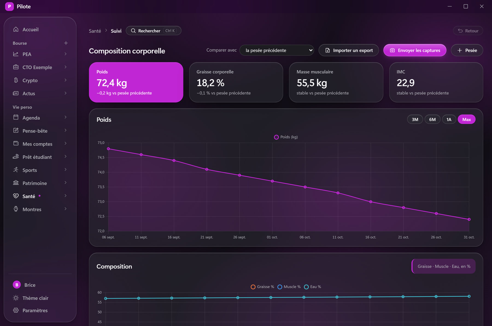

Pilote s'installe aussi sur un Chromebook et sous Linux.
Bourse, budget, sport, santé et patrimoine dans une seule application, sans compte : vos données restent sur votre ordinateur. C'est la même application que sous Windows et sur Mac, en un seul fichier pour toutes les puces (Intel, AMD et ARM).


Sur un Chromebook, en quatre étapes
Comptez dix minutes, dont la plupart pour la première étape, qui ne se fait qu'une fois. Ensuite, Pilote s'ouvre depuis la liste des applications et installe lui-même ses mises à jour.
-
Activer Linux
Paramètres À propos de ChromeOS Développeurs Environnement de développement Linux, puis Configurer. Gardez les réglages proposés : le Chromebook télécharge Linux pendant quelques minutes.
Sur un Chromebook prêté par une école ou une entreprise, cette option est souvent bloquée. Seul son administrateur peut l'ouvrir. -
Télécharger Pilote
Cliquez sur Pilote_Linux.deb. Le même fichier sert à tous les Chromebooks, à puce Intel, AMD ou ARM. Le lien mène toujours à la dernière version.
-
L'installer
Ouvrez l'application Fichiers, puis Téléchargements, et double-cliquez sur
Pilote_Linux.deb. Choisissez Installer, puis patientez : le Chromebook ajoute aussi ce dont Pilote a besoin. -
L'ouvrir
Pilote apparaît dans la liste des applications, dans le dossier Applications Linux. Un clic droit dessus permet de l'épingler à l'étagère.
Sous Ubuntu, Debian ou Mint
Téléchargez Pilote_Linux.deb, puis installez-le d'un double-clic si votre système le propose, ou avec cette ligne, dans le dossier du téléchargement.
Une ligne dans le terminal
Elle télécharge la dernière version et l'installe, avec ce dont Pilote a besoin. Le système demande votre mot de passe.
cd /tmp && wget -O Pilote_Linux.deb https://github.com/pilote-appli/pilote/releases/latest/download/Pilote_Linux.deb && sudo apt install ./Pilote_Linux.deb
Avant d'installer
Mon Chromebook a une puce ARM (MediaTek, Snapdragon) : ça marche ?
Oui, c'est le même fichier. Pilote ne contient aucun programme propre à une puce : il s'appuie sur ce que Linux fournit déjà.
Et les mises à jour ?
Pilote les propose et les installe lui-même, comme sous Windows et sur Mac. Sous Ubuntu, Debian ou Mint, le système demande votre mot de passe. Si l'installation ne peut pas se faire seule, Pilote range le nouveau fichier dans Téléchargements : un double-clic suffit. Vos données restent en place.
Où sont gardés mes codes (Gmail, iCloud, montres) ?
Dans le trousseau de votre session Linux, chiffrés, jamais en clair. S'il n'y a pas de trousseau, Pilote refuse de garder le code et explique comment l'ajouter (sudo apt install gnome-keyring).
Tout fonctionne comme sous Windows ?
Presque : la lecture des captures d'écran (balance FitDays, relevés en image) n'existe pas encore sous Linux. La saisie à la main et l'import des relevés en PDF ou CSV fonctionnent.
Où vont mes données ?
Nulle part ailleurs que sur votre ordinateur, dans ~/.local/share/Pilote/Donnees. Pas de compte, pas de serveur. Désinstaller Pilote ne les efface pas. Le détail est sur la page Confidentialité.
Et Fedora, Arch ou les autres ?
Le fichier .deb sert aux Linux de la famille Debian (Ubuntu, Mint, Pop!_OS, Chromebook). Pour un autre Linux, écrivez-nous : une autre version viendra si elle est demandée.